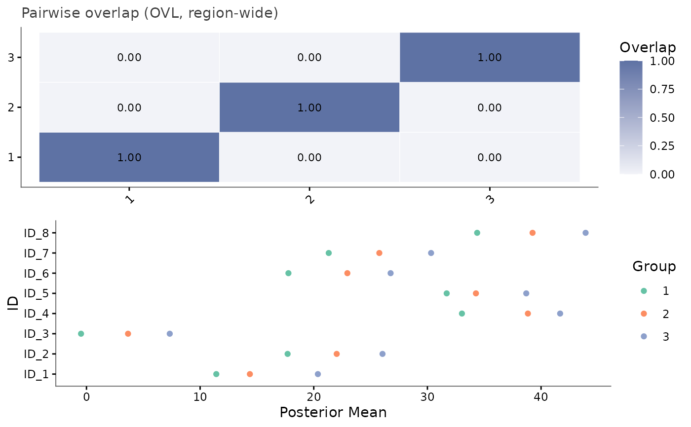
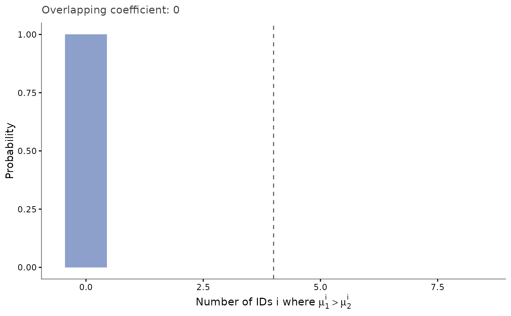

For every pair of groups present in multi_diff, builds the
empirical distribution of the number of IDs for which group1's posterior
draw exceeds group2's (see compute_multi_diff). This
complements plot_distrib's per-id view with a region-wide,
uncertainty-aware summary of whether two groups are differential.
Behaviour depends on how many groups are involved:
exactly two groups: the pair panel (plus the id-mean panel if
plot_mean = TRUE), combined viagridExtra::grid.arrange– unchanged from previous versions.more than two groups: cramming every pair's panel into one upper-triangular grid stops being readable well before the panels stop fitting (a 4-group design already leaves 2 empty grid cells and shrinks 6 panels down to illegibility). Instead, an at-a-glance overview – a heatmap with one tile per pair (plus the id-mean panel if requested) – is displayed immediately, and the full, never-capped set of individual pair panels is returned invisibly for on-demand inspection (mirrors
plot_distrib_each_pair's no-cap philosophy), e.g.plot_multi_diff(multi_diff)$pairs[["A_vs_B"]].
Arguments
- multi_diff
A list, typically coming from
compute_multi_diff, with elementsDiff_probaandDiff_mean(and optionallyOverlap_coef).- plot_mean
A boolean, indicating whether an additional panel showing the posterior mean of every ID (coloured by group, see
plot_posterior_mean) should be displayed. Defaults toTRUE.- cumulative
A boolean, indicating whether each panel shows the cumulative distribution (
TRUE) or the probability mass (FALSE, default) of the number of IDs where group1's posterior draw exceeds group2's.
Value
With exactly two groups: the result of gridExtra::grid.arrange
(the pair panel, plus the id-mean panel if plot_mean = TRUE).
With more than two groups: invisibly, a list with heatmap (the
overview ggplot, already displayed), pairs (a named list
of ggplot objects, one per pair, named
"<group1>_vs_<group2>"), and mean (the id-mean
ggplot, only when plot_mean = TRUE; also already displayed).
Examples
data <- simu_db(nb_id = 8, nb_group = 3, nb_sample = 5, diff_group = 5)
kern <- keRnel::variance_kernel(variance = 1) * keRnel::se_kernel(length_scale = 1)
posterior <- posterior_mean(data, kern)
samples <- sample_posterior(posterior, n = 500)
multi_diff <- compute_multi_diff(samples, results = posterior)
out <- plot_multi_diff(multi_diff) # displays the heatmap + mean panel

out$pairs[["1_vs_2"]] # inspect one pair in full detail
